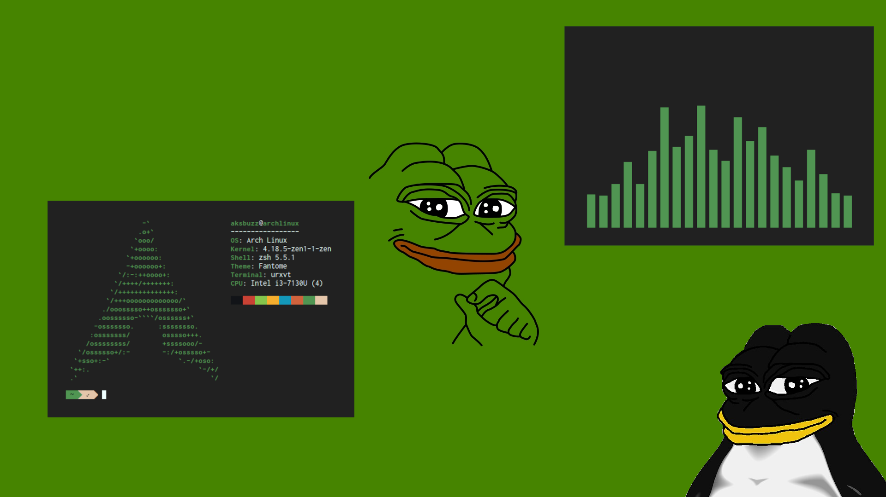
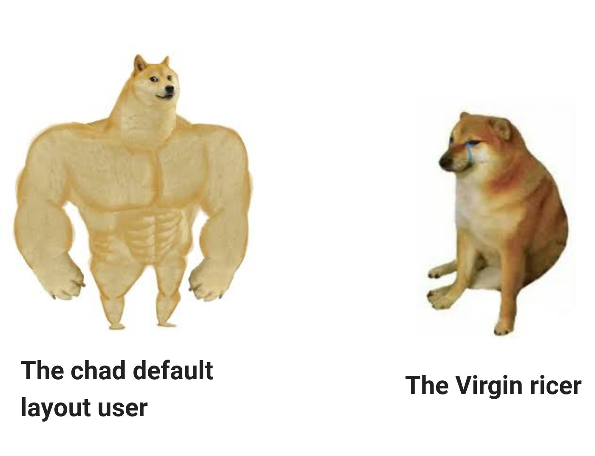

Consejos para tus dotfiles

Recientemente tuve la suficiente cantidad de tiempo para darle algo de mantenimiento a mi computadora personal. Entre las cosas que hice, una importante fue mi cambio de sistema operativo de Debian Linux a Devan Linux. Para esta nueva instalación tuve que hacer respaldos de mis archivos y configuraciones.
Cambiar de sistema operativo típicamente seria una tarea muy molesta, llena de contratiempos, pero teniendo los desfiles bien controlados es realmente solo cuestión del tiempo que pedo durar la instalación. Paradójicamente, entre mas fácil para un usuario es hacer una reinstalación, menos frecuentemente suele necesitar hacer una. Esto ultimo, contrario a un usuario nuevo que tiene mucho por probar y poco tiempo para probar.
Respalda tus configuraciones
Los dotfiles son para guardar. Nunca sabes cuando tendras que cambiar de PC o perderas la informacion de tu maquina actual. Cuado los guardes, haz respaldos. Puedes usar la nube de tu preferencia, meterlos en un disco duro de por allí, pero lo mas comun es meterlas en un repositorio de Git. Normalmente estos se suben a Github o Gitlab.
Conserva solo lo necesario
No hay necesidad de incluir en tus dotfiles todas las configuraciones que tengas en tu sistema. Puede que sea insignificante y puedas vivir sin ella, o que sea tan trivial realizarla que no merezca mucho la pena guardar el archivo de configuración. Solo aumentara la dificultad de gestionar tus configuraciones. En cambio, solo guarda las configuraciones mas significativas para ti, como las del software que mas frecuentas cuando estas tras el teclado, o cosas que necesites por una razón de accesibilidad.
Comparte tus dotfiles
Cuando ya tienes tus dotfiles guardados, sin informacion sensible, sin archivos innutiies, no pierdes nada con compartirlos. Pueden ayudar a alguien mas. Con colocarlos en Github y ponerle la etiqueta dotfiles al repositorio, ya estan en un buen lugar accesible para los demás. Hay otras buenas webs dedicadas a compartir las configuraciones. Algunas de ellas son: Unixporn y Dotshare.
Recuerda revisar las configuraciones de otros usuarios ocasionalmente. Pudes sacar inspiración e ideas para mejorar tus propios dotfiles. Solo no le dediques demasiado tiempo a esto. Puede ser hipnótico inspeccionar las configuraciones de otros usuarios, en especial si se dedican a algo similar a lo que te dedicas tú.
Puedes encontrar mis dotfiles por aquí.
Cuando algo deja de ser una configuración
Las configuraciones para algun programa a veces crecen demasiado. Tal vez comenzaste configurando un atajo de teclado para tu editor de código; después ese atajo se fue haciendo mas sofisticado; tal vez se convirtió en algo tan grande que es mejor separarlo de tus configuraciones personales y crear un plugin para el editor. Pudo haber sido inicialmente un script que creció tanto que perfectamente puede considerarse como un programa completo.
Si inconscientemente terminaste escribiendo software en tus configuraciones, separalo. Publicarlo en Github puede ser una gran idea. Le servirá a otros usuarios y probablemente recibas contribuciones al código que mejoren ese pequeño programa. Es menos probable que alguien contribuya si solo está dentro de tus dotfiles.
Manejar los dotfiles
Ahora, gestionar las configuraciones puede ser aburrido y tedioso. Por suerte, existe la manera definitiva de hacerlo: usando stow.
Usa stow
Stow es una maravilla. La idea de stow es ahorrarnos el problema de tener que copiar nuestros archivos de configuración a sus ubicaciones correspondientes cada que las queremos usar, o también, copiar de vuelta los archivos al repositorio luego de hacer una modificación. Con stow, tenemos un unico lugar donde van todas las configuraciones, luego con se enlazan usando links entre archivos para ponerlos en su localización.
Al usar stow necesitamos de una carpeta que este dentro de $HOME que contenga los dotfiles. Esta carpeta debe estar organizada de esta forma: carpetas con nombres de los programas que dentro contienen todo lo necesario para configurarse como si fuesen otro directorio HOME. Por ejemplo:
~/.dotfiles/
├── bash
│ └── .bashrc
├── scripts
│ └── .local
│ └── bin
│ ├── sync
│ └── colortest
├── urxvt
│ └── .Xresources
├── vim
│ └── .vimrc
└── zathura
└── .config
└── zathura
└── zathurarcPara instalar nuestras configuraciones hacemos, por ejemplo, stow vim para instalar solo los archivos de configuracion de Vim, stow urxvt bash para los de Bash y Urxvt, y stow * para instalar todos los archivos de todos los programas.
Una vez instalados tendremos que si editamos ~/.vimrc en realidad estaremos editando ~/.dotfiles/vim/.vimrc, por lo que los cambios se harán en el repositorio y Git los rastreara. Por el lado contrario, si hacemos git pull en el repositorio, este se actualizara y con él lo harán los archivos pues están enlazados.
Stow, ademas de solucionar el ubicar los archivos de configuracion, tambien nos propone una estructura de directorios funcional para almacenarlos.
Usa los .gitignore
Hay archivos que no queremos que Git agregue al repositorio. Usando un archivo .gitignore podemos hacer que sean ignorados. Por ejemplo, si usamos un el lector de RSS Newsboat, definitivamente no queremos que se guarde el cache, el hisotorial, ni nuestras URLs privadas de las webs que seguimos. Lamentablemente, Newsboat coloca estos archivos en la misma carpeta que donde va la configuración. Basta con agregar un archvio llamado .gitignore que contenga el siguiente texto.
cache.db
cache.db.lock
history.cmdline
history.search
urlsLas expresiones pueden ser mas complejas (podriamos indicar que se ignoren todos los archivos PDF, por poner un ejemplo), pero creo que quedan claras las ventajas de usar los .gitignore en nuestros dotfiles.
Existen archivos equivalentes en otros sistemas de respaldo como Syncthing. Si no usa Git, investigue como se hace en su programa elegido.
Configuración mínima y configuración total
Esto es importante.
La vida te da dos caminos a elegir al cultivar tus dotfiles. Puedes ser alguien que configura todo en absoluto, que no se deja pasar ningún detalle con tal de mejorar su configuración, que no se guarda ninguna incomodidad; o puedes ser un usuario que hace configuraciones minimalistas con solo lo que necesita, pensando en no hacer cosas extrañas ni gastar mucho tiempo en ello por mas que otros lo vean como una inversión.
Personalmente, prefiero por mucho ser un usuario de configuraciones predeterminadas.

Diseño y buen gusto
Hacer dotfiles solo por hacerlos, ocasiona que sean bastante feos. Hay un par de trucos que terminara descubriendo si sigue haciendo dotfiles.
Mantén la estética consistente
Si usas un esquema de color tu editor de código, definitivamente querrás tenerlo también en tu terminal, o por lo menos algo que combine. Puedes extender esta idea personalizando los temas usando los mismos tonos de color y la misma fuente tipográfica en todos los programas. El fondo de pantalla también debe combinar o sentirás una gran incomodidad al mirarlo.
Hay esquemas de color que son famosos por ser excelentes en estética y funcionalidad. Si no tienes tiempo para diseñar el tuyo, usa alguno de esos esquemas famosos como Nord y Gruvbox.
Hay esquemas de color que se ven genial, pero a la hora de usarlos aparecen terribles problemas: cansan la vista, dificultan la lectura, cuesta encontrar elementos en la pantalla, entre otras cosas. Esto sencillamente no es funcional, y hay que cambiarlos de inmediato.
El fondo de pantalla no debe ser lo mas importante
Hay quienes remueven todos los elementos gráficos y simplemente colocan un fondo de pantalla llamativo. Simplemente hacerlo apesta.
Deja los temas oscuros
Los temas oscuros (en verdad muy oscuros) son lo mas llamativo al inicio. Se tiene la idea de que solo se puede escoger entre un tema claro con un hiriente blanco intenso y uno oscuro que es mejor para la vista y mas elegante. Casi siempre se olvidan de los colores pasteles que están en un punto medio. Con un esquema de colores pasteles suaves definitivamente no obtendrá una apariencia agresiva como la que sí tendría con algo oscuro con colores contrastantes, pero obtendrá el resto de ventajas y sera incluso mejor para los ojos.
Las preferencias personales dan la ultima palabra. Solamente considere otros niveles de contraste antes de elegir.
Cuando configurar no es suficiente
Escribe scripts
Escribir scripts realmente hace la diferencia. Hacerlo implica ser un usuario que de verdad aprovecha una PC. Puede ser para cualquier cosa: tomar una captura de pantalla, sincronizar tus documentos, enviar una notificación cada 30 minutos para recordarte estirar las piernas, cambiar al tema oscuro después de las 8:00 pm, listar los documentos, eliminar archivos temporales…
Recomiendo altamente hacerlos en POSIX Shell Scripting, pero cualquier lenguaje de scripting funcionara bien.
Haz un fork
No siempre es posible realizar la configuración que tanto deseamos. Hacer un fork al programa para aplicarle nuestras modificaciones deseadas es la opción que aparece. Hacer un fork puede ser tedioso, mantenerlo, aun mas. Se tiene que evaluar muy bien si valdrá la pena hacerlo, pero muchas veces no queda otra opción.
Si la modificación que quieres hacer es una genialidad, haz un pull request. Si el proyecto ya no esta mantenido, no lo dudes, crea el fork, no te perderás de nada, esa cosa ya se está empolvando.
Crea tus propios programas
Si ni configurar ni modificar el código es suficiente, es turno escribir un programa desde cero. La ventaja es clara: personalización total. Los costos serán tus habilidades para diseñarlo. Esto solo debería hacerse cuando se detecta una necesidad muy importante para nuestro flujo de trabajo y se esta completamente seguro de que no se ha hecho ya antes.
El software hecho a medida es el sentido supremo de la computadora personal. A veces hay que tenerlo en cuenta, sobre todo hoy en día que casi todo es basura.